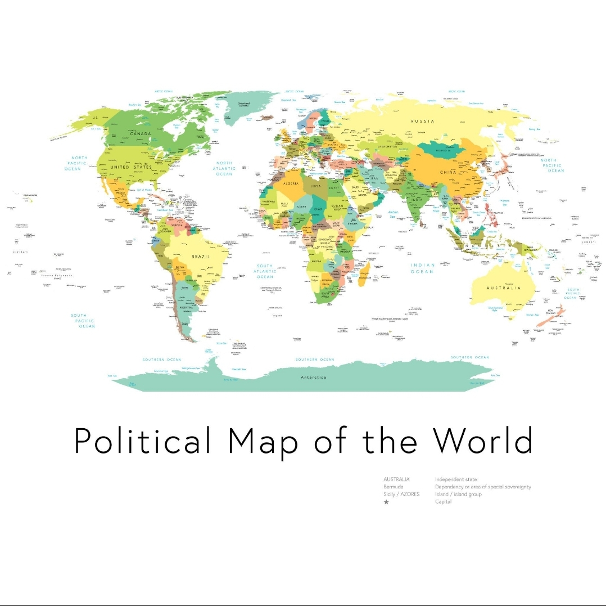

SOVEREIGNAQUA LIVING TRUST FOUNDATION
Advancing sustainable infrastructure and environmental solutions worldwide
Advancing Global Water Security
SovereignAqua Foundation develops sustainable water infrastructure, environmental stewardship programs, and humanitarian logistics worldwide.
Support Our Mission
Your contribution supports research, sustainable water infrastructure, environmental stewardship, and humanitarian initiatives worldwide.
Support MonthlySecure donation powered by Stripe. Contributions support mission-driven initiatives.
Our Mission
Leadership
The SovereignAqua Research & Development Foundation is guided by a multidisciplinary leadership team dedicated to advancing sustainable water infrastructure, environmental stewardship, and humanitarian logistics initiatives worldwide.
- Executive Director
- Research & Development Leadership
- International Partnerships
SovereignAqua Foundation advances global water infrastructure, environmental stewardship, and humanitarian logistics through research, innovation, and collaborative partnerships.
Transparency & Governance
The Foundation operates with a commitment to transparency, accountability, and responsible stewardship of resources.
Research & Innovation
The Foundation supports research initiatives focused on water infrastructure systems, environmental sustainability, and humanitarian logistics development. Our programs aim to advance practical solutions for communities worldwide.
Global Outreach
SovereignAqua Research & Development Foundation collaborates with partners and research initiatives across multiple regions worldwide to support sustainable water infrastructure, environmental stewardship, and humanitarian development.
Global Presence
Our initiatives and research partnerships span multiple regions, supporting sustainable water infrastructure development worldwide.
